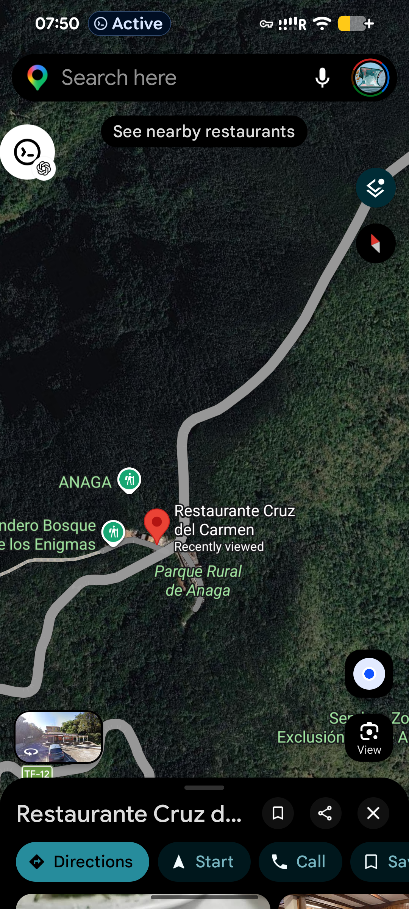
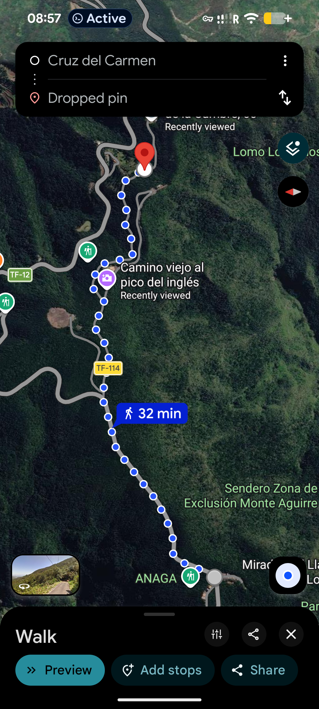
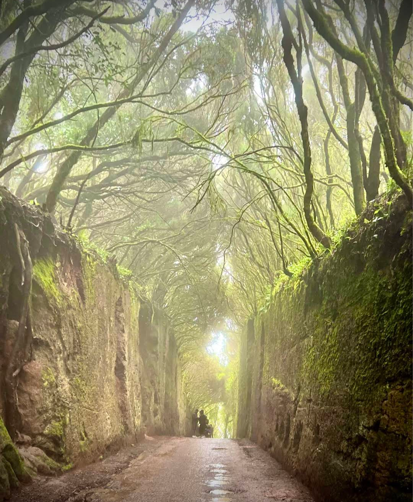
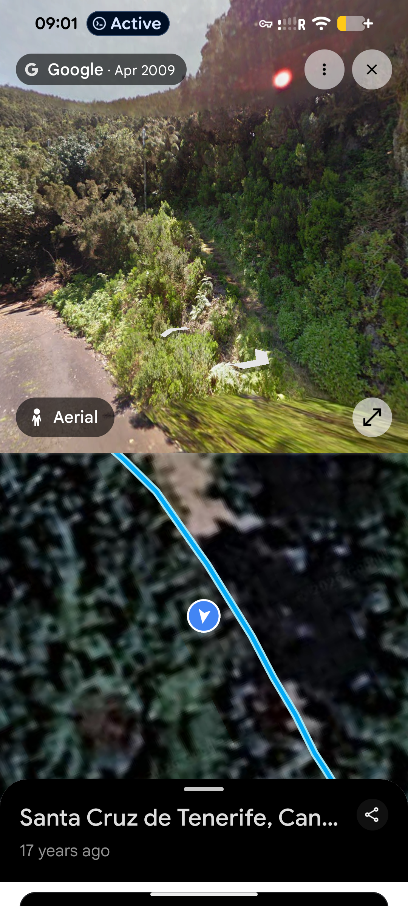
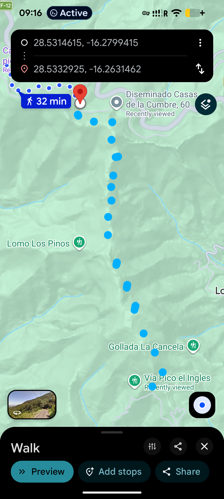
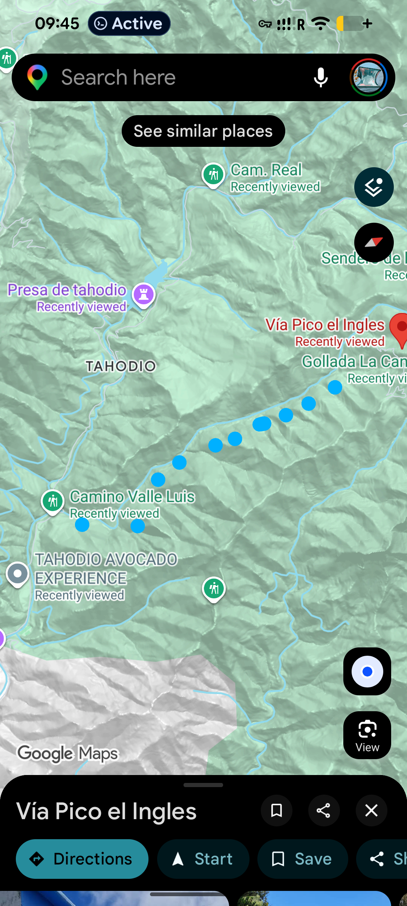

Not on any map. Untouched by tourists. Just beautiful.
Take a bus from La Laguna bus station to the Cruz del Carmen stop. From there, continue on foot.
↗ Cruz del Carmen on Google Maps
Walk for about 32 minutes along the road. Along the way it passes through a tunnel of ancient laurel trees — branches closing overhead, mossy stone walls on both sides, light at the far end.
↗ Route on Google Maps


At the end of the route shown in the previous map, you can already see the trail veering off to the right.
At the end of this road section, turn right onto a trail. It appears on no map, but is perfectly safe in dry weather.
↗ Location on Google MapsAfter rain — slippery. Go only in clear, dry weather.
The trail runs along the ridge with views across the whole of Anaga. Clear weather is essential — in overcast conditions, clouds cover everything.




From Vía Pico el Inglés the trail follows the barranco down to Tahodio. Along the way other paths branch off — depends on your energy and time.
On the rocky cliffs across the barranco you may spot black goats leaping between ledges, keeping you company for a stretch.